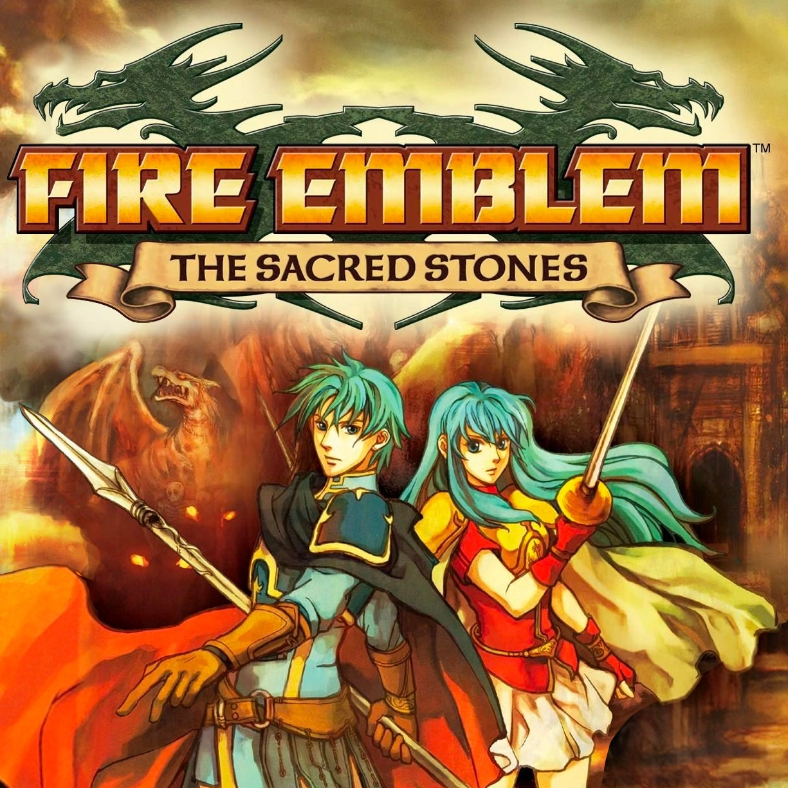
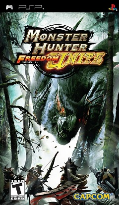

There are tons of Fire Emblem games but only few of them I was able to play.
I plan to play more of them in the future so each will be labeled with if I have or not.
Fire Emblem: The Binding Blade - (incomplete)
Fire Emblem: The Blazing Blade - (incomplete)
Fire Emblem: The Sacred Stones - (completed)
The game cover for Fire Emblem: Sacred Stones.

Monster Hunter
This is my favorite franchise since this stems back all the way to me playing the demo of Freedom Unite back in 2011.
Monster Hunter Freedom Unite [PSP] - (complete)
Monster Hunter Portable 3rd [PSP] - (incomplete)
Monster Hunter World [Steam] - (incomplete)
Monster Hunter Rise [Steam] - (incomplete)
Monster Hunter Wilds [Steam] - (incomplete)
Monster Hunter Stories [Steam] - (completed)
Monster Hunter Stories 2: Wings of Ruin - (incomplete)
Monster Hunter Stories 3: Twisted Reflection - (not released yet)
The game cover for Monster Hunter Freedom Unite.

Persona
This was fairly recently but because some of them are available on Steam I ended up playing some.
Persona 3 Portable [Steam] - (incomplete)
Persona 5 Royal [Steam] - (completed)
Persona 5 Strikers [Steam] - (incomplete)
Persona 3 Reload [Steam] - (incomplete)
Persona 5: The Phantom X [Steam & iOS] - (incomplete)
Persona 4 Revival [Steam] - (not released yet)
The game cover for Persona 5 Royal.
SpongeBob SquarePants
These games are the first and some of the childhood classics of mine.
SpongeBob's Truth or Square [Wii, PSP, & Nintendo DS]- (completed)
SpongeBob SquarePants: Battle for Bikini Bottom [PS2] - (completed)
The SpongeBob Squarepants Movie [PS2] - (completed)
SpongeBob SquarePants: The Yellow Avenger
SpongeBob SquarePants: Creature from the Krusty Krab [PS2] - (completed)